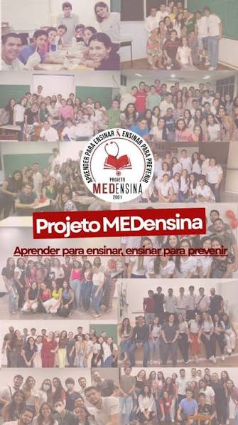

O Projeto MEDensina é um projeto de extensão da Universidade Federal do Amazonas (UFAM) que atua na área de educação em saúde, aproximando estudantes da área da saúde e comunidade por meio do compartilhamento de conhecimentos científicos de forma clara, acessível e acolhedora.
Seu principal propósito é contribuir para a prevenção de doenças e a promoção da saúde, levando informações que possam ajudar as pessoas a compreender melhor sua saúde, esclarecer dúvidas e tomar decisões mais conscientes sobre seu bem-estar. Para o MEDensina, educação em saúde vai além de simplesmente transmitir informações: é também conversar, ouvir, esclarecer e construir conhecimento junto à comunidade.
Ao mesmo tempo em que leva conhecimento à população, o projeto proporciona aos estudantes uma experiência de formação que ultrapassa a sala de aula.
A participação no MEDensina permite que seus membros desenvolvam conhecimentos relacionados aos temas de saúde abordados e aprimorem habilidades importantes para sua futura atuação profissional, especialmente a capacidade de comunicar informações de maneira clara e acolhedora.
A história do MEDensina começou em 2001, durante a greve dos docentes da UFAM. Nesse período, um grupo de estudantes tomou a iniciativa de realizar palestras de educação em saúde em escolas de Manaus, levando informações e conhecimentos relacionados à saúde diretamente para a comunidade.
O que começou como uma iniciativa estudantil durante um momento de paralisação da universidade não terminou com o fim da greve. Pelo contrário: após o retorno das atividades, a ação foi institucionalizada como um projeto de extensão, permitindo que suas atividades continuassem e que o projeto permanecesse ativo até os dias atuais.
Desde então, o MEDensina construiu uma trajetória marcada pela união entre educação, formação acadêmica e compromisso com a comunidade. Ao longo de sua existência, o projeto passou por diferentes momentos e atividades, mantendo como essência a proposta de utilizar o conhecimento adquirido pelos estudantes para contribuir com a promoção da saúde.
Em sua trajetória, o projeto chegou a uma marca especial: 25 anos de história. São décadas de atuação que representam não apenas a continuidade de um projeto de extensão, mas também a participação de diferentes gerações de estudantes e o contato com diversas comunidades por meio das ações de educação em saúde. O MEDensina mantém, assim, uma proposta que une dois lados fundamentais: o estudante aprende para poder ensinar, e a comunidade recebe conhecimento para poder cuidar melhor de sua saúde.
As atividades do MEDensina abordam diferentes assuntos relacionados à saúde e à prevenção de doenças. Entre os temas já trabalhados estão infecções sexualmente transmissíveis, arboviroses, higiene pessoal, gravidez na adolescência, métodos contraceptivos e tuberculose, entre outros. A gravidez na adolescência aparece como o tema palestrado com maior frequência. Por meio dessas ações, o projeto busca transformar o conhecimento científico em uma linguagem que possa ser compreendida pela população, tornando a educação em saúde mais próxima da realidade das pessoas.
O MEDensina representa uma oportunidade de transformar conhecimento em ação. Para os estudantes, é um espaço de aprendizado, desenvolvimento e preparação. Para a comunidade, é uma forma de acesso a informações de saúde apresentadas de maneira acessível e acolhedora. Mais do que um projeto de extensão, o MEDensina constrói uma ponte entre universidade e comunidade, mostrando que compartilhar conhecimento também é uma forma de cuidar.